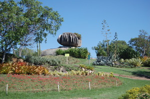
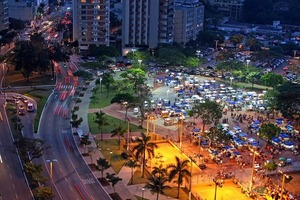
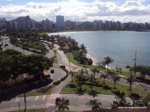
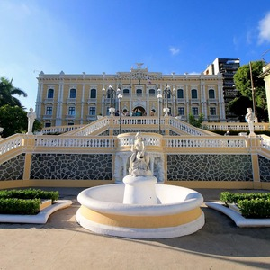
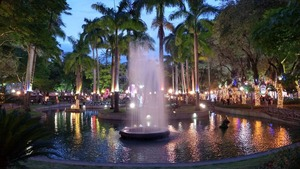

Pontos Turísticos de Vitória/ES
Parque Pedra da Cebola

Foto da Pedra da Cebola.
Praça dos namorados

Foto da feira da Praça dos Namorados.
Curva da jurema

Foto da praia da Curva da Jurema.
Palácio Anchieta

Foto da entrada do Palácio Anchieta.
Parque Moscoso

Foto do Parque Moscoso.